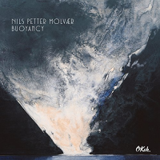

Nils Petter Molvær: Buoyancy
 By
By
October 27, 2016
More than thirty years ago, Norwegian trumpeter Nils Petter Molvær had left his mark as an exceptional improviser with his ECM Records debut on Masquarelo's Bande à Part (1985). Those beginnings—in the company of Nordic jazz legends—led Molvær to an ongoing process of nurturing his musical sensibilities across electronic grooves, club beats, jazz, and more genre-defying styles. Molvær's new quartet offers Buoyancy, a natural progression from 2014's Switch (Okeh).
Geir Sundstöl on guitars and banjo and Erland Dahlen on drums, percussions, xylophone and piano were part of Molvær's Switch quintet. They are joined here by Jo Berger Myhre playing bass, keyboards and guitar. Molvær adds electronics and other effects to his trumpet contribution but, in comparison to Switch, Buoyancy is lighter on the programming and electronics; functions that had been in the hands of three members of the earlier quintet.
Molvær wrote each of the ten compositions on the album and the diversity of styles is broad. The aforementioned electronics are very much present on the opening "Ras Mohammed," a distant feeling piece with a Middle Eastern flavor. The too-brief "Moute Cave" is an ethereal Molvær solo as is the beautiful "Martoli Bridge." Sundstöl's electric guitar drives the thundering "Jackson Reef," propelled further by Dahlen's dynamic drumming and Myhre's bass. The most exotic piece on Buoyancy is "Puri Jati" with the trumpet complimented by Sundstøl's sitar-like National resophonic guitar, an instrument he had used to great effect on the previous album. The ghostly "Maddagala" closes the album, again with an alluring blend of trumpet, guitars and electronics.
As Molvær continues to experiment with tonal nuances, sonorities and effects, he demonstrates an expert understanding of how and where to implement these properties in each coherent composition. All of these elements have led him to more refined writing rather than excess. Buoyancy is an expertly balanced collection of global influences, minimalism, noise and a solid jazz sensibility; each piece is different but there is an intangible anchor throughout the collection.
Track Listing: Ras Mohammed; Gilimanuk; Moute Cave; Jackson Reef; Puri Jati; Lamna Reef; Amed; Martoli Bridge; Kingfish Castle; Maddagala.
Personnel: Nils Petter Molvær: trumpet, electronics, effects; Geir Sundstöl: guitars, banjo; Erland Dahlen: drums, percussions, xylophone, piano; Jo Berger Myhre: bass, keyboards, guitar.
Year Released: 2016 | Record Label: Okeh | Style: Modern Jazz